Home / Menus
Menus & Tasting
A showcase of Alejandro's cooking style: refined, seasonal, and led by fine-dining technique. Every menu is tailored to the client, the occasion and any dietary requirements.
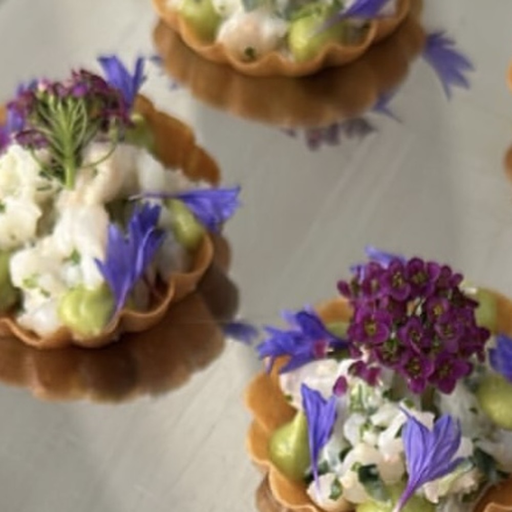
Crab, Avocado & Corn Flower
Sweet white crab and avocado in a crisp tartlet shell, finished with fresh corn flowers.
Signature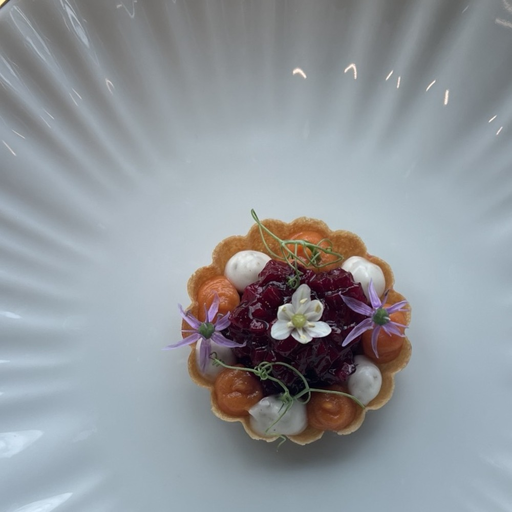
Beetroot Tartar, Pumpkin & Yogurt
Marinated beetroot tartare, spiced pumpkin and whipped yogurt in a delicate tartlet.
Vegetarian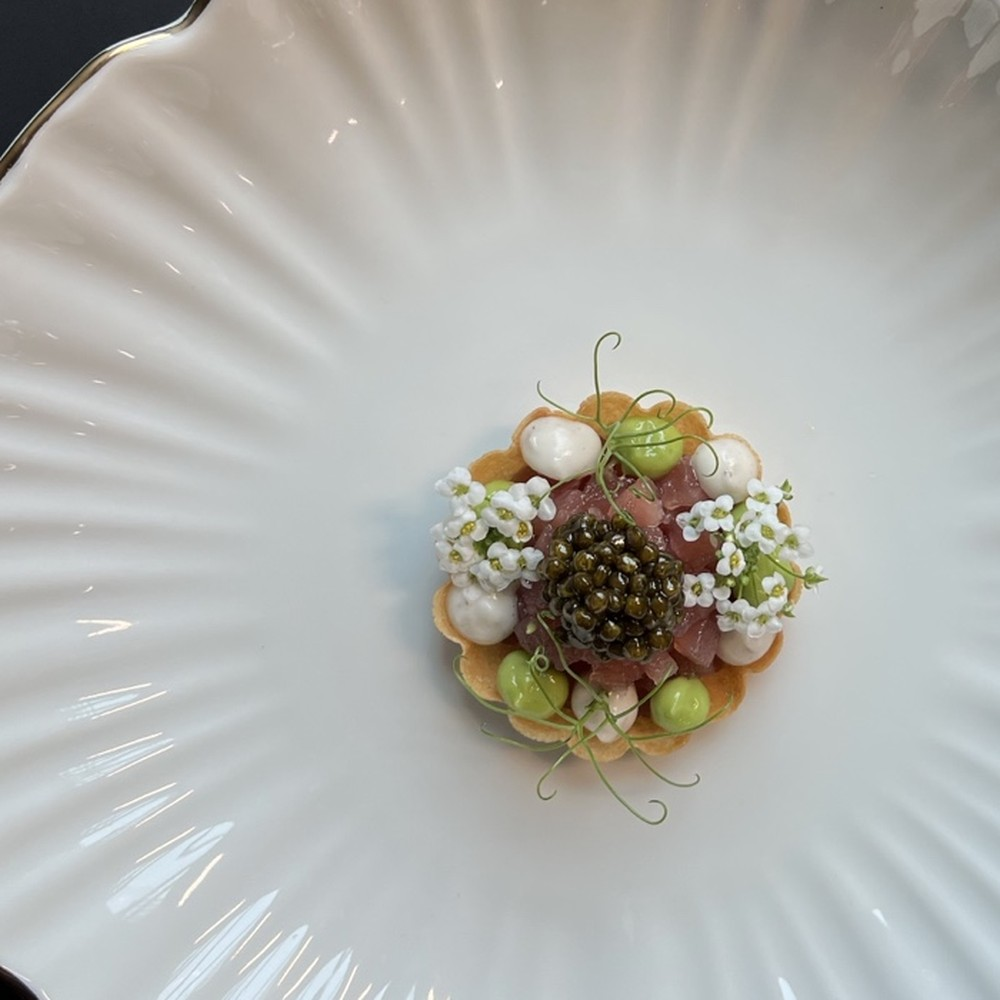
Tuna Tartar, Miso, Avocado & Truffle
Yellowfin tuna tartare with miso, avocado and shaved black truffle.
With Truffle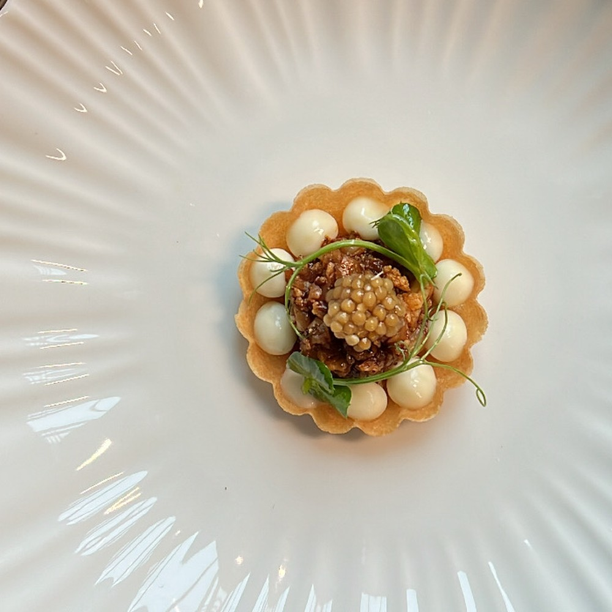
Spiced Cauliflower, Parsnip Emulsion & Mustard Seeds
Roasted spiced cauliflower, silky parsnip emulsion and toasted mustard seeds.
Vegetarian
Wagyu Spring Rolls, Caviar & Truffle
Crisp wagyu beef spring rolls, finished with caviar and shaved truffle.
Signature
Manchego Croquettes, Topped with Ibérico Ham & Caviar
Creamy manchego croquettes, topped with Ibérico ham and caviar.
Spanish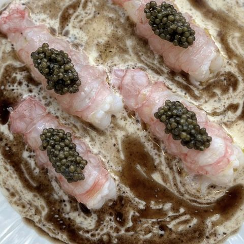
Crudo Langoustines, Cauliflower Velouté, Brown Butter & Caviar
Raw langoustines over cauliflower velouté, brown butter and caviar.
With Caviar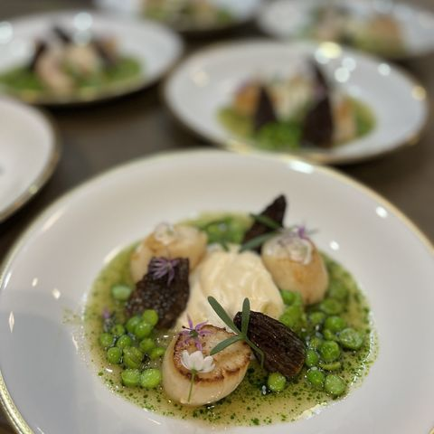
Scottish Scallops, Fresh Peas, Morels & Cauliflower
Seared Scottish scallops with fresh garden peas, wild morels and cauliflower purée.
Seasonal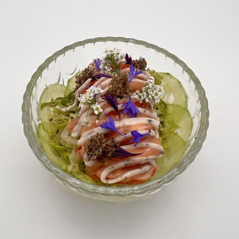
Lobster Cocktail, Pickled Cucumber & Truffle
Classic lobster cocktail reimagined with pickled cucumber and shaved truffle.
With Truffle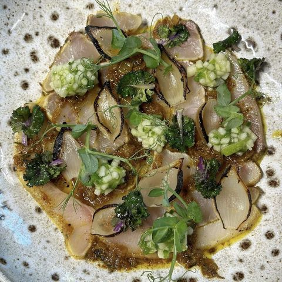
Yellow Tail Hamachi, Curry Marinade, Jalapeño & Green Apple Chutney and Chipolatas
Hamachi cured in a curry marinade, with jalapeño and green apple chutney.
Asian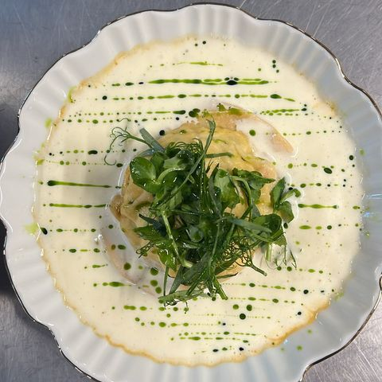
Crab & Lobster Ravioli, Champagne & Parmesan Beurre Blanc and Basil Oil
House-made crab and lobster ravioli in a champagne and parmesan beurre blanc.
Signature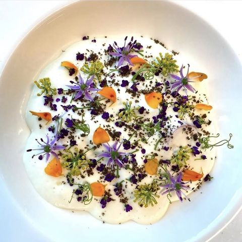
Courgette & Asparagus Salad, Parmesan Foam & Cress Garden
Shaved courgette and asparagus salad with parmesan foam and a garden of cress and edible flowers.
Vegetarian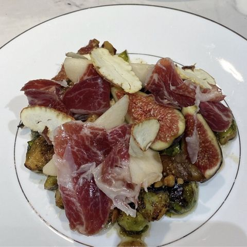
Chestnut, Ibérico Ham, Figs & Jerusalem Artichoke Salad with Raspberry Dressing
Roasted chestnut and Jerusalem artichoke salad with Ibérico ham, figs and a raspberry dressing.
Spanish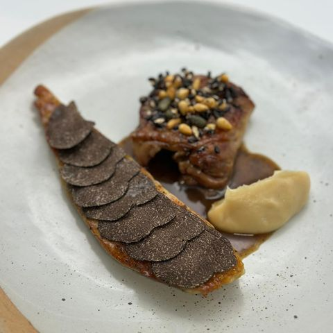
Corn Fed Chicken Breast, Truffle, Parsnip Purée & Wild Rice Granola
Corn-fed chicken breast finished with truffle, parsnip purée and a wild rice granola.
Signature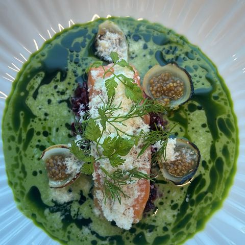
Confit Salmon, Cucumber Gazpacho & Tarragon Oil
Slow confit salmon over a chilled cucumber gazpacho, finished with tarragon oil.
Fine Dining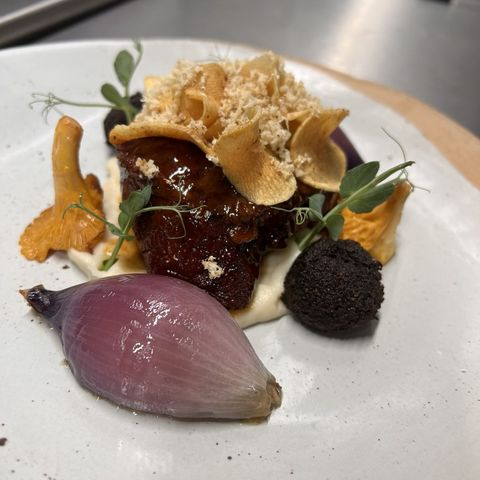
Ox Cheek, Cauliflower Purée, Girolles & Beef Jus
Slow-braised ox cheek with cauliflower purée, wild girolles and a rich beef jus.
Signature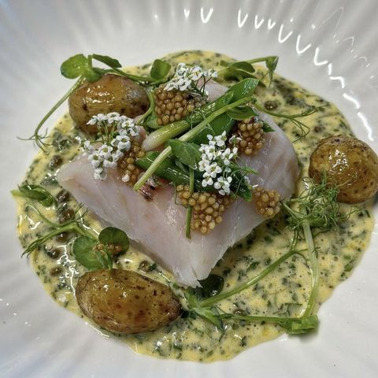
Roasted Turbot, Jersey Potatoes, Herbed Hollandaise & Basil Oil
Roasted turbot with Jersey potatoes, herbed hollandaise and basil oil.
Fine Dining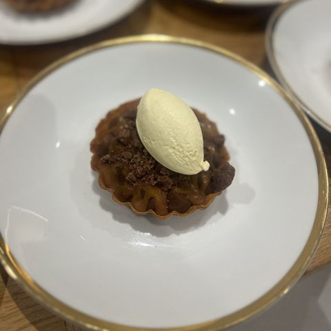
Chocolate Tartlet, Brownie Crumble & Cinnamon Ice Cream
Rich chocolate tartlet with brownie crumble and house-made cinnamon ice cream.
Signature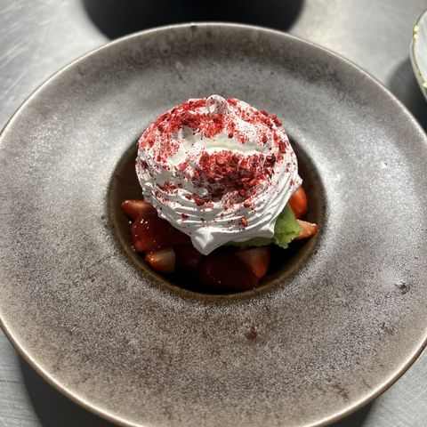
Strawberry Pavlova, Mint Sorbet & Strawberry Nectar
Crisp meringue pavlova with fresh strawberries, mint sorbet and strawberry nectar.
Seasonal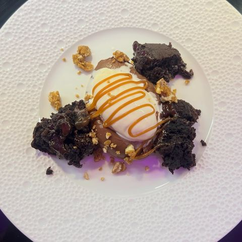
Chocolate Crémeux, Warm Chocolate Pudding, Caramel, Cookie Crumble & Madagascar Vanilla Ice Cream
Layers of chocolate crémeux and warm pudding with caramel, cookie crumble and Madagascar vanilla ice cream.
Signature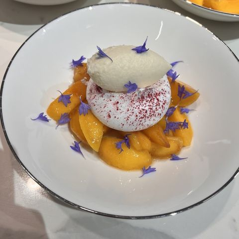
Peach, Lavender & Meringue
Poached peach with lavender, meringue and a light yoghurt cream.
Light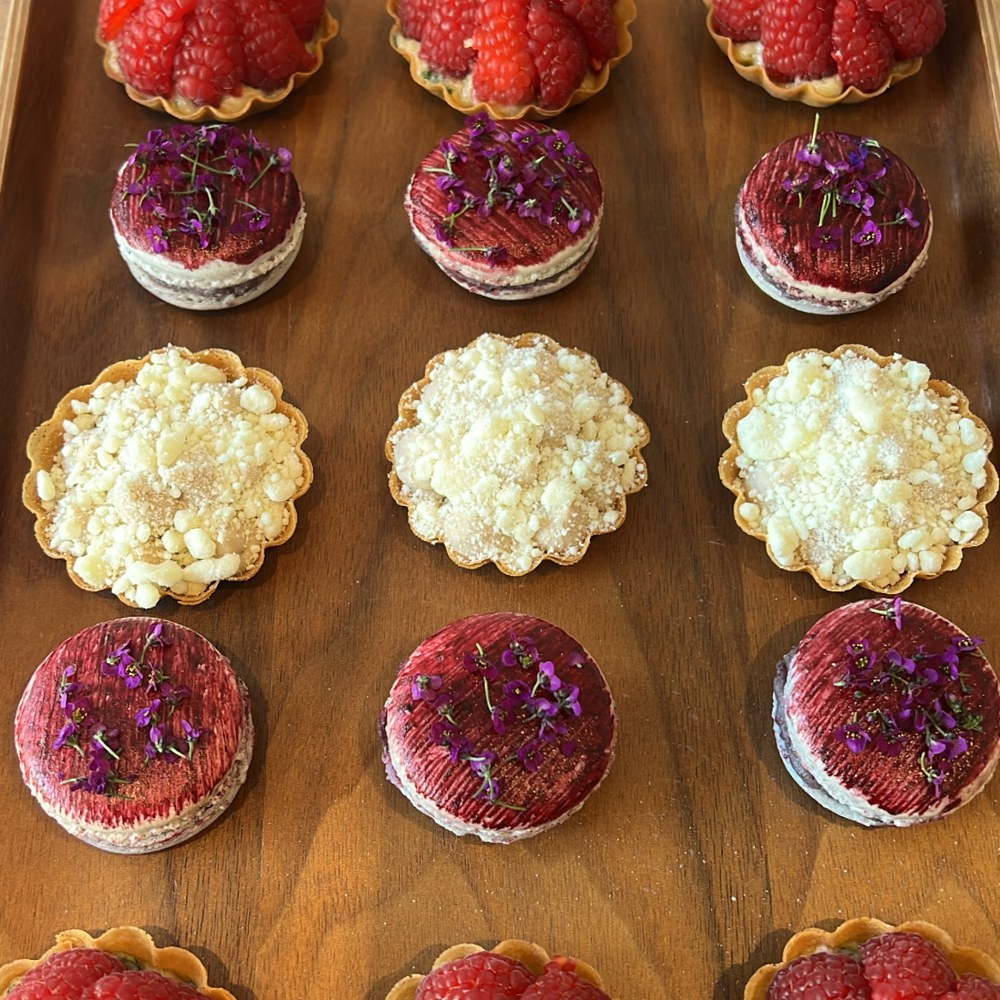
Petit Four Tray — Coconut & Mango Tart, Raspberry & Tarragon
A tray of bite-sized tartlets: coconut and mango, and raspberry and tarragon.
Tropical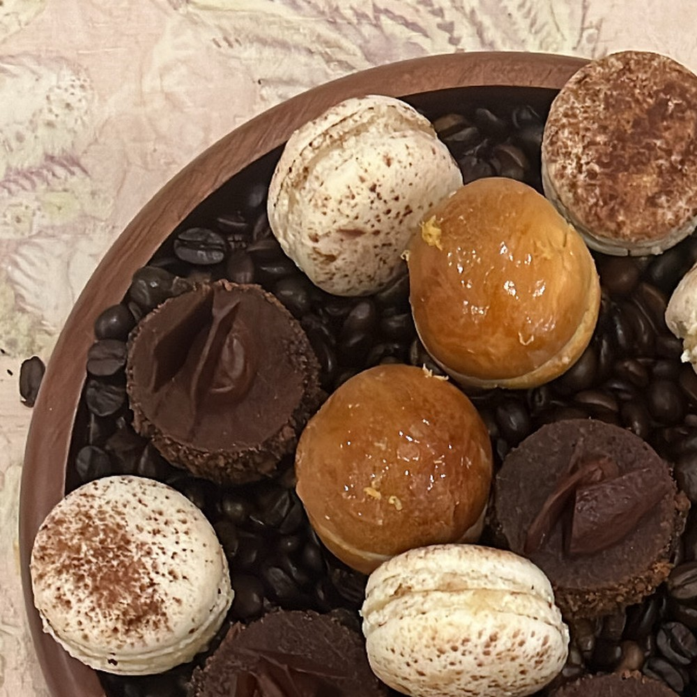
Petit Four Selection — Cinnamon Macaron, Tarte Tropézienne, Triple Chocolate Bonbon
Cinnamon macarons, miniature tarte tropézienne and triple chocolate bonbons.
Coffee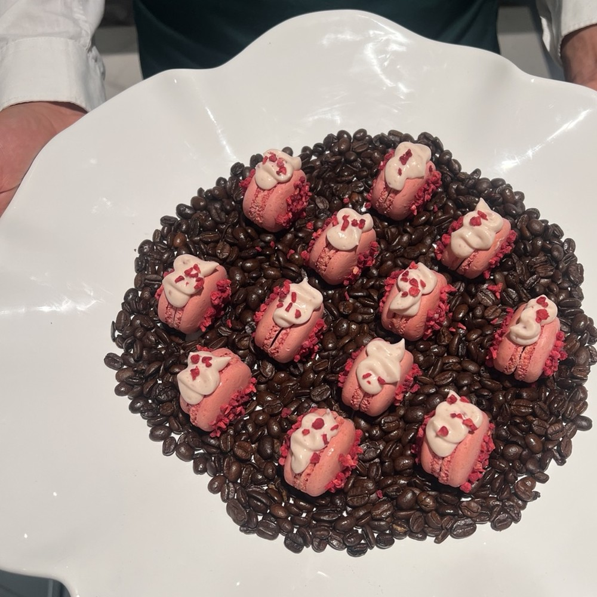
Panna Cotta & Raspberry Macaron
Silky panna cotta paired with raspberry macarons.
SignatureEvery menu is fully customisable. Allergies, religious requirements (kosher-style), vegetarian or vegan preferences, and children's menus are designed at no extra cost. Pricing varies according to guest numbers, location and length of service.
Request a menu proposal